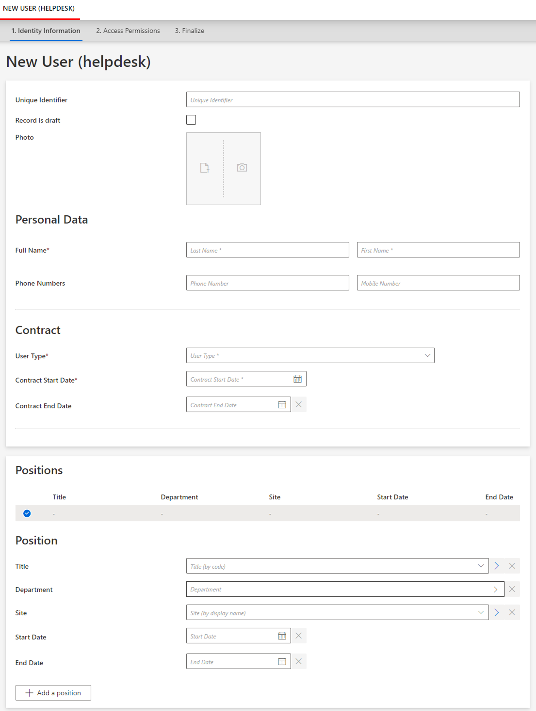
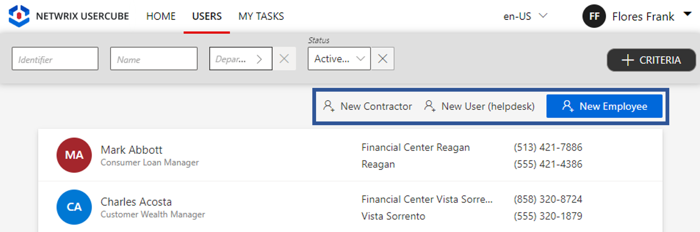
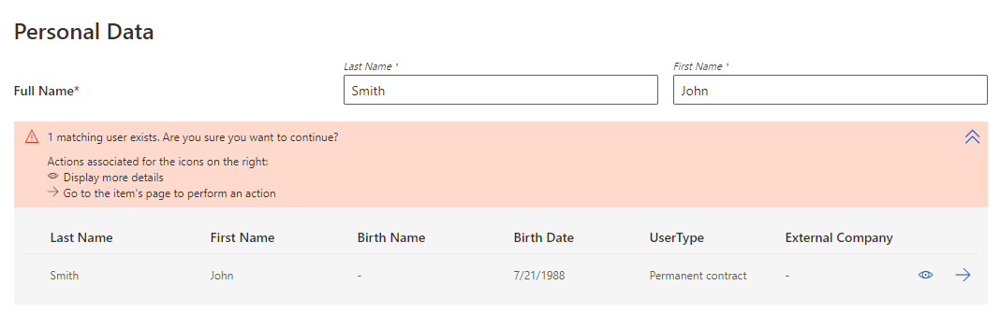

For Resource Creation (Multi Records)
This section guides you through the procedure for the creation of a workflow to create a new resource with several records.
Declare a Workflow
This Workflow is made of four activities:
Action With Refine: sends the creation request with a possibility of delegation.Persist Only Resources: saves the collected data to the repository without triggering provisioning.Review With Feedback: reviews the creation request with the possibility of getting feedback from another user.Persist: saves the collected data and triggers provisioning.
See the Activity Templates topic for additional information.
The example below creates a workflow to create a new helpdesk worker, with the possibility to create several records at once for said worker.
<Workflow Identifier="Helpdesk_Directory_User_New" DisplayName_L1="User - New Employee (multi record)" VariablesType="Workflow_Directory_User"> <Activity Identifier="Request" DisplayName_L1="Request" Template="ActionWithRefine" /> <Activity Identifier="PersistDraft" DisplayName_L1="Draft Creation" Template="PersistOnlyResources" /> <Activity Identifier="Review" DisplayName_L1="Review" Template="ReviewWithFeedback" /> <Activity Identifier="Persist" DisplayName_L1="Commit" Template="Persist" /></Workflow>
Create Forms
The XML configuration below represents the creation of a Form that defines the elements to display in the workflow.
Here we create three structured forms, all to be called in our final workflow form.
First form for the user's identification data:
<Form Identifier="Workflow_Helpdesk_Directory_User_Base" EntityType="Directory_User"> <Control DisplayName_L1="User Information" OutputType="LayoutFieldset"> <Control Binding="Identifier" /> <Control Binding="EmployeeId" /> <Control Binding="IsDraft" /> </Control></Form>
Second form for the user's data shared with all records:
<Form Identifier="Workflow_Helpdesk_Directory_UserRecord_Shared" EntityType="Directory_UserRecord">
Section for user's personal data, here their name and phone numbers:
<Control DisplayName_L1="Personal Data" OutputType="LayoutFieldset"> <Control DisplayName_L1="Full Name" OutputType="LayoutRowset"> <Control Binding="LastName" IsRequired="true" /> <Control Binding="FirstName" IsRequired="true" /> </Control> <Control DisplayName_L1="Phone Numbers" OutputType="LayoutRowset"> <Control Binding="PhoneNumber" /> <Control Binding="MobileNumber" /> </Control> </Control>
Section for user's contract data, here their contract's type, start and end dates:
<Control DisplayName_L1="Contract" OutputType="LayoutFieldset"> <Control Binding="UserType" IsRequired="true" /> <Control Binding="ContractStartDate" IsRequired="true" /> <Control Binding="ContractEndDate" InputType="Date" AddedMinutes="1440" /> </Control></Form>
Third form for the user's data specific to each record individually, so here position information:
<Form Identifier="Workflow_Helpdesk_Directory_UserRecord_Unique" EntityType="Directory_UserRecord"> <Control DisplayName_L1="Position" OutputType="LayoutFieldset"> <Control Binding="Title" /> <Control Binding="Organization" /> <Control Binding="Site" /> <Control Binding="StartDate"/> <Control Binding="EndDate" InputType="Date" AddedMinutes="1440" /> </Control></Form>
Link the Forms to the Workflow
After creating a workflow with given activities, it is necessary to create the form to be displayed when launching the workflow. It has the type corresponding to a resource's creation with several records, i.e. WorkflowCreateSeveralRecordEntityForm and it must specify the workflow's context (the entity type of the involved resources, the main property, the activity when the form is called, etc):
<WorkflowCreateSeveralRecordsEntityForm Identifier="Workflow_Helpdesk_Directory_User_New" EntityType="Workflow_Directory_User" MainProperty="Workflow_Directory_User:Directory_User" RecordProperty="Directory_User:Records" RecordTable="Directory_UserRecord_Helpdesk" WorkflowRequestType="Helpdesk" Activity="Helpdesk_Directory_User_New:Request" FormTitle_L1="New User (helpdesk)"/>
A WorkflowCreateSeveralRecordEntityForm requires the following child elements:
MainControlthat defines the user's data that never changes so identification data, and calls the firstform created previously;
<WorkflowCreateSeveralRecordsEntityForm Identifier="Workflow_Helpdesk_Directory_User_New" EntityType="Workflow_Directory_User" MainProperty="Workflow_Directory_User:Directory_User" RecordProperty="Directory_User:Records" RecordTable="Directory_UserRecord_Helpdesk" WorkflowRequestType="Helpdesk" Activity="Helpdesk_Directory_User_New:Request" FormTitle_L1="New User (helpdesk)">
<MainControl OutputType="TransformImport" EmbeddedForm="Workflow_Helpdesk_Directory_User_Base"/>
</WorkflowCreateSeveralRecordsEntityForm>
RecordControlthat defines the record data shared with all records, and calls the secondform created previously;
<WorkflowCreateSeveralRecordsEntityForm Identifier="Workflow_Helpdesk_Directory_User_New" EntityType="Workflow_Directory_User" MainProperty="Workflow_Directory_User:Directory_User" RecordProperty="Directory_User:Records" RecordTable="Directory_UserRecord_Helpdesk" WorkflowRequestType="Helpdesk" Activity="Helpdesk_Directory_User_New:Request" FormTitle_L1="New User (helpdesk)"> <MainControl OutputType="TransformImport" EmbeddedForm="Workflow_Helpdesk_Directory_User_Base"/>
<RecordControl OutputType="TransformImport" EmbeddedForm="Workflow_Helpdesk_Directory_UserRecord_Shared"/>
</WorkflowCreateSeveralRecordsEntityForm>
In a situation where users can have several positions but also several contracts, then contract data would be part of the form called by RecordUniqueItemControl instead of RecordControl.
In a situation where positions, contracts and personal data are all configured as records because we want to be able to anticipate changes for example, then there would not be any data shared by all records. Then RecordControl would be empty. See the
Position Change via Records
topic for additional information.
<WorkflowCreateSeveralRecordsEntityForm ... > ... <RecordControl OutputType="LayoutContainer"> <Control OutputType="LayoutContainer" /> </RecordControl> ... </WorkflowCreateSeveralRecordsEntityForm>
RecordUniqueItemControl(optional but recommended) that defines the record data specific to each record individually, and calls the thirdform created previously.
<WorkflowCreateSeveralRecordsEntityForm Identifier="Workflow_Helpdesk_Directory_User_New" EntityType="Workflow_Directory_User" MainProperty="Workflow_Directory_User:Directory_User" RecordProperty="Directory_User:Records" RecordTable="Directory_UserRecord_Helpdesk" WorkflowRequestType="Helpdesk" Activity="Helpdesk_Directory_User_New:Request" FormTitle_L1="New User (helpdesk)"> <MainControl OutputType="TransformImport" EmbeddedForm="Workflow_Helpdesk_Directory_User_Base"/> <RecordControl OutputType="TransformImport" EmbeddedForm="Workflow_Helpdesk_Directory_UserRecord_Shared"/>
<RecordUniqueItemControl OutputType="TransformImport" EmbeddedForm="Workflow_Helpdesk_Directory_UserRecord_Unique"/>
</WorkflowCreateSeveralRecordsEntityForm>

Assign the Right Permissions
Some profiles must get specific permissions so that the workflow is visible and usable by the right users. Read about Workflow s permissions.
Below is an example of an access control rule where the Administrator profile gets the permissions for the whole creation request and review from the previously created workflow:
<AccessControlRule Profile="Administrator" EntityType="Workflow_Directory_User" Identifier="Administrator_Workflows_Helpdesk_Directory_User_New*" DisplayName_L1="Administrator_Workflows_Helpdesk_Directory_User_New*">
Permissions for the Request activity:
<Entry Permission="/Custom/Workflows/Helpdesk_Directory_User_New/Request/ActionPending" CanExecute="true" /> <Entry Permission="/Custom/Workflows/Helpdesk_Directory_User_New/Request/Aborted" CanExecute="true" /> <Entry Permission="/Custom/Workflows/Helpdesk_Directory_User_New/Request/Purged" CanExecute="true" />
Permissions for the Review activity:
<Entry Permission="/Custom/Workflows/Helpdesk_Directory_User_New/Review/ReviewPending" CanExecute="true" /> <Entry Permission="/Custom/Workflows/Helpdesk_Directory_User_New/Review/RefinePending" CanExecute="true" /> <Entry Permission="/Custom/Workflows/Helpdesk_Directory_User_New/Review/Aborted" CanExecute="true" /> <Entry Permission="/Custom/Workflows/Helpdesk_Directory_User_New/Review/Purged" CanExecute="true" /></AccessControlRule>
Create Menu Items in the UI
Menu Item must be defined to make the workflow accessible in the UI.
Creating a new resource, an interesting location for this workflow could be the users list page.

To create a menu item here for the new workflow, you can add the following XML configuration to the existing menu items list:
<MenuItem Identifier="Menu_Search_Directory_User" DisplayName_L1="Menu"> ...
<MenuItem Identifier="Menu_Search_Directory_User_Helpdesk_New" DisplayName_L1="New User (helpdesk)" IconCode="AddFriend" Workflow="Helpdesk_Directory_User_New" />
</MenuItem Identifier="Menu_Search_Directory_User" DisplayName_L1="Menu">
Add Aspects
For each workflow, it is possible to add aspects according to the workflow's purpose.
Homonym Detection (Optional)
To perform a homonymy check on a workflow and thus prevent user duplicates see the Configure a Homonym Detection topic for additional information.
When using records, the homonym detection displays the list of records and not just the list of users.
Below is an example where a homonym entity link, based on the user's name, is called in the workflow form:
Homonym detection:
<HomonymEntityLink Identifier="Homonym_Directory_UserRecord" FormEntityType="Directory_UserRecord">
<Filter
Property1="FirstName"
Property2="LastName"
/> <Filter
Property1="FirstName" ComparisonProperty1="LastName"
Property2="LastName" ComparisonProperty2="FirstName"
/> <Filter
Property1="FirstName"
Property2="LastName" ComparisonProperty2="BirthName"
/></HomonymEntityLink>
Partial form for user data:
...
<Control DisplayName_L1="Personal Data" DisplayName_L2="Informations personnelles" OutputType="LayoutFieldset" HomonymEntityLink="Homonym_Directory_UserRecord"> <Control DisplayName_L1="Full Name" DisplayName_L2="Nom complet" OutputType="LayoutRowset"> <Control Binding="LastName" IsRequired="true" /> <Control Binding="FirstName" IsRequired="true" /> </Control></Control>...

Customize the Display Table (Optional)
To configure a display table different from the default one provided by Identity Manager, see the Customize Display Tables topic for additional information.
Below is an example of a display table for our situation:
<DisplayTable Identifier="Directory_UserRecord_SeveralRecords" EntityType="Directory_UserRecord" DisplayTableDesignElement="table"> <Column DisplayBinding="Title.InternalDisplayName" DisplayName_L1="Title" IsDisplayInSummaryView="true" ColumnSize="1" /> <Column DisplayBinding="Organization.InternalDisplayName" DisplayName_L1="Department" IsDisplayInSummaryView="true" ColumnSize="1" /> <Column DisplayBinding="Location.InternalDisplayName" DisplayName_L1="Site" IsDisplayInSummaryView="true" ColumnSize="1" /> <Column DisplayBinding="StartDate" DisplayName_L1="Start Date" IsDisplayInSummaryView="true" ColumnSize="1" /> <Column DisplayBinding="EndDate" DisplayName_L1="End Date" IsDisplayInSummaryView="true" ColumnSize="1" /></DisplayTable>